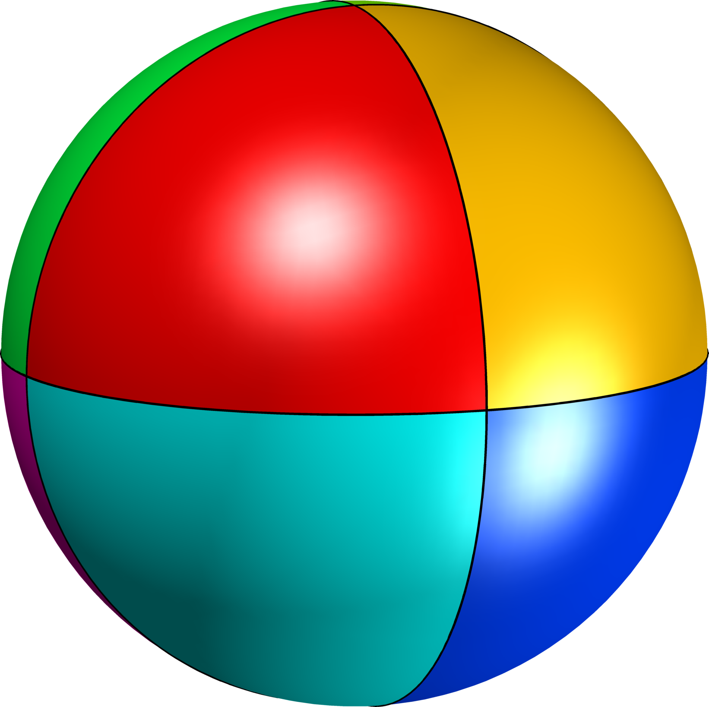

3D positive lattice walks and spherical triangles
in collaboration with Vincent Perrollaz, Kilian Raschel and Amelie Trotignon
For details and complete description of this work, take a look at our paper 3D positive lattice walks and spherical triangles.
ContentsIntroduction
We consider 3D random walk models with steps in a family $\mathcal S \subset \{(x,y,z): x,y,z \in \{-1,0,1\}\}\setminus\{0,0,0\}$. For non degenerate models where $\mathcal S$ is not included in a half-space the critical exponent of each model can be linked to the fundamental eigenvalue of a spherical triangle.
Our results deal with the following aspects:
- Investigate links between the properties of the model, like the associated combinatorial group, and the associated spherical triangle.
- Provide a way to compute numerically, and even analytically, when possible, the critical exponents with the aid of the eigenvalues of spherical triangles.
Presentation of the results
Theorem 17. (from our article) Among all infinite group 3D models we have the following classification in terms of angles:
- exactly one right angle
- exactly two right angles
- three right angles
- three angles equal to $2\pi/3$ (Tetrahedral partition)
- triangles with three angles $\arccos(1/3) = 0.3918265520\pi$ (polar triangle of the equilateral triangle with angles $2\pi/3$)
- 
-

Partitions associated to the equilateral triangles with angles $\pi/2$ and $3\pi/2$
- Model in $G_1$ corresponding to three right angles with "no drift" (sum of steps equal to the zero vector): critical point for the inventory $(1,1,1)$ $$M = \begin{pmatrix} -1 & -1 & -1& -1 & -1 & 0 & 0 & 1 & 1 & 1 & 1 & 1\\ -1 & -1 & 0 & 1 & 1 & -1 & 1 & -1& 0 & 0 & 0 & 1\\ -1 & 0 & 0 & 0 & 1 & 0 & 0 & 1 & -1 & 0 & 1 & -1 \end{pmatrix}$$
- Model in $G_1$ with triangle with three right angles and drift in each direction (sum of steps has all components non-zero): critical point for the inventory $(1.6180,1.6180,1.6180)$ $$ M = \begin{pmatrix} -1& -1& -1& -1& -1& 0& 0& 0& 1& 1\\ -1& -1& -1& 0& 1& -1& 0& 1& -1& 0\\ -1& 0& 1& -1& -1& -1& 1& 0& -1& 0 \end{pmatrix} $$
- Model in $G_1$ with triangle with three right angles and drift in each direction (sum of steps has all components non-zero): critical point for the inventory $(0.6180,0.6180,0.6180)$ $$ M = \begin{pmatrix} -1& -1& 0& 0& 0& 1& 1& 1& 1& 1\\ -1& 0& -1& 0& 1& -1& -1& -1& 0& 1\\ 1& 0& 1& -1& 0& -1& 0& 1& 1& 1 \end{pmatrix} $$
-
There are $1394$ equilateral triangles corresponding to models in $G_1$. A full list can be found in the following document.
The list of angles with tolerance $10^{-8}$ can be found in the following file: angles_equiG1.csv. In some case, explicit algebraic expressions can be found using symbolic computations. There are Matlab codes in the Numeric section below which can be run on the list of equilateral triangles given above in order to find the precise algebraic expression for these angles.
Of course, among these there are triangles with other angles than $\pi/2$ or $2\pi/3$. In particular, the equilateral triangle with angles $\arccos(1/3) = 0.3918265520\pi$ is the polar to the Kreweras triangle with three angles $2\pi/3$. There are five such triangles in $G_1$. Two examples are given below: $$M = \begin{pmatrix} -1& -1& 0& 0& 1& 1\\ -1& 0& -1& 1& 0& 1\\ 1& 0& 1& -1& 1& 1 \end{pmatrix} $$ $$M = \begin{pmatrix} -1& -1& 0& 0& 1& 1\\ -1& 0& -1& 1& 1& 1\\ 1& 0& 1& -1& -1& 0 \end{pmatrix} $$
Numerical tools
If you use any of the tools provided in this section in your work, please give credid by citing the associated article.
In this section we present some numerical tools used in our work. These tools can confirm some of the results presented in the paper.
- Computing the eigenvalue of a spherical triangle coupled with an extrapolation procedure in order to accelerate the convergence.
- Construct mesh: sph_triangle_mesh_Pts.m
- Assemble Laplace-Beltrami finite elements: beltrami_KM.m
- Compute Dirichlet eigenvalues given a mesh: sph_tri_eigs_Run.m
- Extrapolation procedure for higher accuracy: accurate_bel_Silent.m
- Testing if a model is included in a halfspace
- Compute the associated triangle to a 3D walk model
- Numerical approximation (precision between 1e-12 and 1e-16) test_Contents_Saved.m
- Symbolic computations (uses Matlab Symbolic Toolbox; does not always work) test_Contents_Symbolic.m
- Compute critical exponent given a 3D model: Matlab implementation with numerical computation of the triangle and the eigenvalue: readDB_inf_mat.m
- Testing if the combinatorial group is a subgroup of the group of the symmetries of the triangle (with machine precision)
- testing_sphsymm.m
- also needs the following: DrawSymSphTri0, arc_sphere.m, rota.m
- Some numerical results (containing matrices which can be directly imported into Matlab)
- Results for finite groups
- Some results for infinite groups
- The steps for all except $G_1$: reducedG2.csv, reducedG3.csv, reducedG4.csv, reducedG5.csv, reducedG6.csv, reducedG7.csv, reducedG8.csv, reducedG9.csv, reducedG10.csv, reducedG11.csv, reducedG12.csv
- Results in Matlab .mat files. Lines which are zero correspond to models which are included in a halfspace. G2, G3, G4, G5, G6, G7, G8, G9, G10, G11, G12
Created: Mar 2018, Last modified: Mar 2018